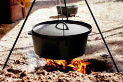

Food Tributes
Here we pay tribute to some of the most beloved dishes in Utah's culinary tradition. These recipes have been passed down through generations and continue to bring families together around the dinner table.
Raspberry Cake

Raspberry cake holds a special place in Utah households. Known for its moist layers and vibrant raspberry filling, this cake has been a staple at family gatherings and celebrations for decades. The combination of fresh raspberries and light frosting makes it an unforgettable treat that everyone loves.
Raspberry Ice Cream

Homemade raspberry ice cream is a summertime tradition across Utah. Using fresh-picked raspberries, this creamy dessert captures the essence of Utah summers. Families have been making this recipe for generations, churning it in old-fashioned ice cream makers and enjoying it on warm evenings together.
Dutch Oven Cooking

Dutch oven cooking is one of Utah's most beloved culinary traditions. Brought by early pioneers, the Dutch oven has been used to cook everything from breads to stews over open campfires. Today, Dutch oven cooking remains a point of Utah pride, with competitions and cook-offs held throughout the state every year.
Jello Cake

Utah is famously known for its love of Jello, and Jello cake is a classic example of this tradition. This colorful dessert layers fluffy cake with vibrant Jello flavors, creating a festive treat that is as fun to look at as it is to eat. No Utah potluck is complete without a Jello creation on the table.